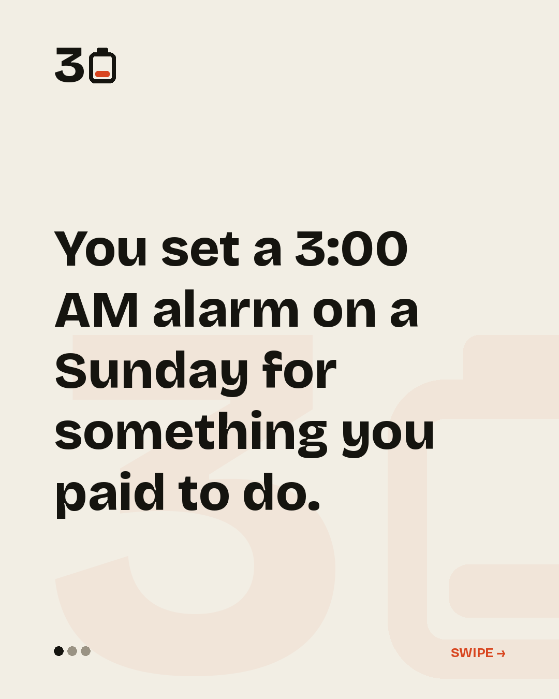
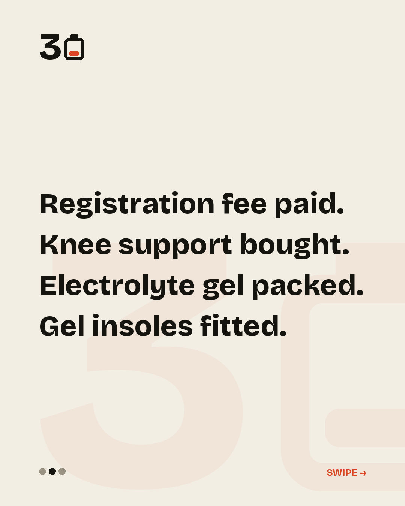
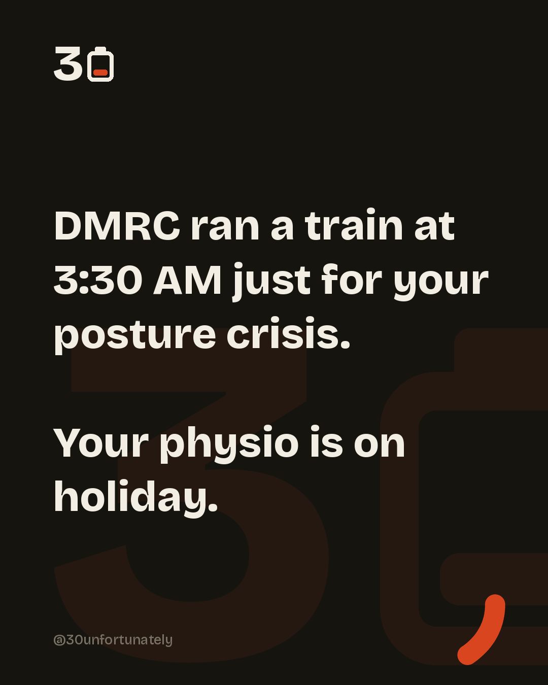

Likes run at 26.8% of reach on carousels against 5.3% on reels, and 1 posts have been saved.
Weekly average reach, by format
14 Sep
21 Sep
28 Sep
5 Oct
12 Oct
reelcarouseltallest 50
Per post
55 posts have a first-day number. Best g011 reached 122, worst g044 reached 3, median 19.
How long reels are watched
Reels are watched 4.4s on average (median 3.7s). Correlation with reach is -0.23 — the reels watched longest reached fewest, because average watch time is per play and a cold audience swipes. Not a target yet.
Today’s candidates
Nothing generated today. The last run was 15 Oct — see it →
Only posts you can still stop or push. 83 already published, skipped or unused are not listed — their numbers are in the charts above, and `publish.py posts` prints them one by one. These files are what Meta pulls at publish time.



g075 · list_collapse · satire 4 The corporate spine needs an extreme athletic crisis to justify its weekly stiffness.